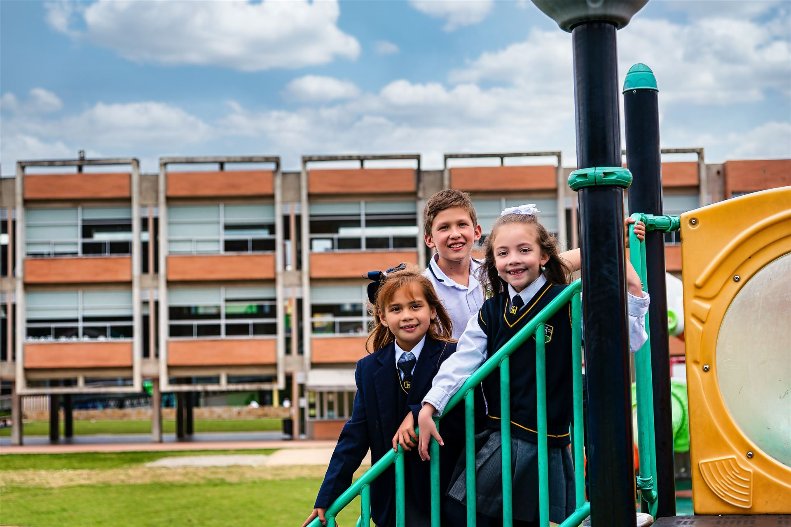
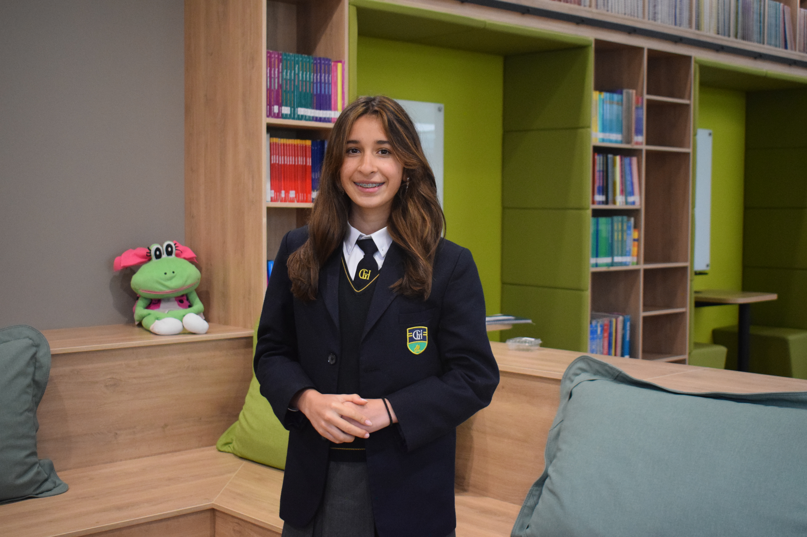

.png)
COMPROMISO AMBIENTAL Y RESPONSABILIDAD CON EL FUTURO
Sostenibilidad en el Gimnasio El Hontanar: Educando Líderes Conscientes
En el Gimnasio El Hontanar entendemos que la sostenibilidad no es solo un tema de estudio, sino un estilo de vida que se aprende y se practica en el día a día. Como Colegio del Mundo IB y referente en educación bilingüe en Bogotá, asumimos el reto de formar ciudadanos globales con una profunda conciencia ecológica y la capacidad de proponer soluciones reales a los desafíos ambientales de hoy.
Nuestro compromiso con el cuidado de la casa común se refleja en la gestión de nuestro campus campestre y en los proyectos de aula que invitan a los estudiantes a analizar su impacto en el entorno.
Sostenibilidad en acción dentro del campus hontanar
Vivimos la educación ambiental a través de iniciativas concretas que involucran a toda la comunidad escolar:
Gestión responsable de recursos
Implementamos programas de reciclaje, reducción de plásticos de un solo uso y optimización en el consumo de agua y energía dentro de nuestras instalaciones.

Proyectos de investigación y STEM+H
Desde primaria hasta la Escuela Alta, los estudiantes desarrollan proyectos científicos e interdisciplinarios enfocados en energías renovables, biodiversidad y consumo responsable.
Conexión con el entorno
Aprovechamos las zonas verdes de nuestro campus campestre entre Chía y Bogotá para realizar actividades de siembra y cuidado ambiental, convirtiendo la naturaleza en un aula viva.

Ciudadanos comprometidos con el bienestar común
Fieles a nuestra filosofía y valores, buscamos que los estudiantes comprendan que sus acciones individuales tienen un impacto colectivo. La sostenibilidad en El Hontanar forma jóvenes críticos, audaces y responsables, capaces de liderar propuestas que mejoren su comunidad y su calidad de vida.
Zonas verdes campus campestre Hontanar
Sostenibilidad e Identidad Hontanar
Este enfoque se articula activamente con nuestro Modelo de Enseñanza, donde el aprendizaje significativo impulsa la toma de decisiones informadas y con base científica.
A su vez, la sostenibilidad dialoga de forma directa con la identidad institucional reflejada en nuestra Filosofía y Valores, y en los reconocimientos reales que respaldan nuestro compromiso ecológico visible: nuestros Sellos Hontanar.

Formar, Actuar y Liderar con Compromiso
En El Hontanar, la sostenibilidad forma estudiantes capaces de analizar, actuar y liderar con compromiso. Porque educar hoy implica preparar ciudadanos que comprendan su papel en el bienestar común y sepan convertir el conocimiento en soluciones para el mundo que habitan.
PREPARAR CIUDADANOS PARA EL BIENESTAR COMÚN
Conexiones Institucionales Hontanar
La experiencia de Sostenibilidad se vive en nuestro campus ubicado entre Chía y Bogotá, el cual puedes conocer en el Tour Virtual. Además, nos proyectamos hacia oportunidades globales desde Consejería Internacional, donde la formación ambiental se conecta con contextos académicos en el exterior. Si deseas resolver inquietudes sobre programas y participación estudiantil, visita Preguntas Frecuentes.


.png)
.jpg)